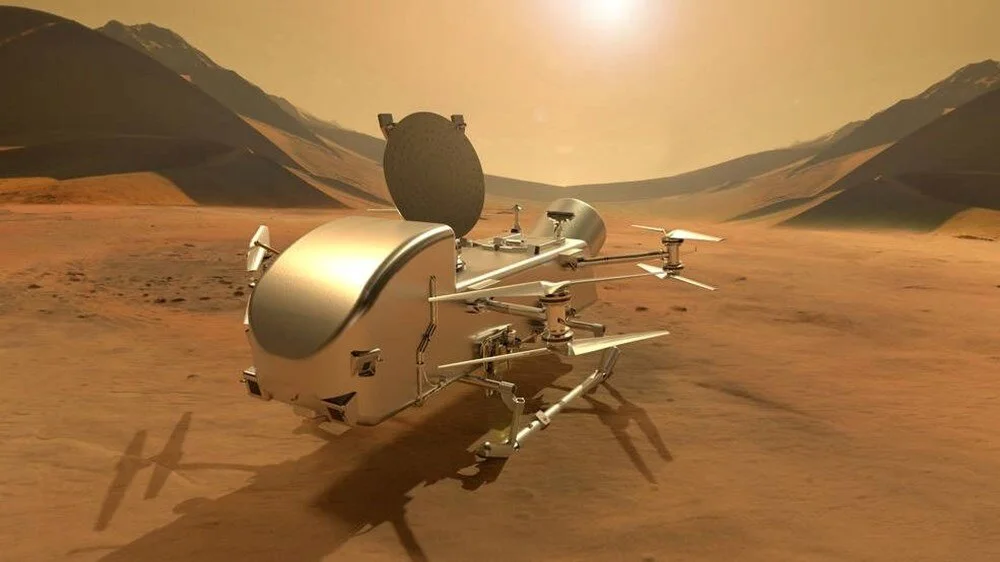

1- Kasım ara tatil ne zaman başlıyor? 2024 ilk ara tatil kaç gün sürecek?
Açıklama:2024-2025 eğitim öğretim yılı için Milli Eğitim Bakanlığı tatil takvimini açıkladı. Akademik takvime göre; öğrenciler Kasım ayı içerisinde 9 günlük ara tatil yapacak. Böylece ilkokul, ortaokul ve lise öğrencileri yoğun ders temposuna kısa bir ara vermiş olacak.
2- Whatsapp'a yeni özellik: "Sana yazmayı unuttum" bahanelerine son
Açıklama:WhatsApp, hatırlatıcı özelliğiyle kullanıcıların sık iletişim kurduğu kişilerden gelen mesajları yanıtlamayı unutmamasını sağlıyor. Test edilen algoritma, belirlediği kişilerin okunmamış mesajları için hatırlatıcı niteliğinde bir bildirim gönderiyor.
3- NASA'dan 250 milyon dolarlık anlaşma: Satürn'ün uydusu Titan'a yolculuk!
Açıklama:NASA, Satürn’ün uydusu Titan’ı keşfetmek için SpaceX ile 256,6 milyon dolarlık anlaşma yapıldığını duyurdu. 2028’de fırtatılması beklenen Dragonfly adlı nükleer güçle çalışan uzay aracı, Titan’da yaşam belirtilerini araştıracak ve karbon açısından zengin yüzey materyallerini analiz edecek.
